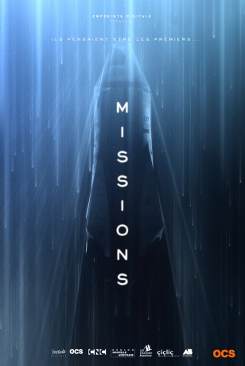

")
 
 IMDB-Wertung: 6.7 / 10
IMDB-Wertung: 6.7 / 10  Metascore:
Metascore: 
Der exzentrische, Schweizer Milliardär William Meyer hat eine achtköpfige Crew zusammengestellt, die eine von ihm finanzierte europäische Mars-Mission durchführen soll – sie sollen die ersten Menschen auf dem Mars werden.Dazu gehört ein bekanntes Astronauten-Ehepaar, in letzter Sekunde kommt die Psychiaterin Jeanne Renoir dazu.Nach zehn Monaten Weltraumreise kommt am Tag vor der Landung die Hiobsbotschaft: Eine amerikanische Mars-Mission war schneller und landete als erstes auf dem roten Planeten. Kurz darauf die nächste schlechte Neuigkeit: Die Amerikaner haben massive Probleme und müssen gerettet werden.Nachdem die europäische Mission nun selbst eine schwierige Landung durchmacht, geht es auf die Suche nach Überlebenden. Man wird fündig – aber es handelt sich nicht um einen Amerikaner, sondern einen Sowjet-Russen, der eigentlich 1967 bei einer „Nicht-Mars“-Mission ums Leben gekommen sein sollte …
Jahr: 2017
Dauer: 26 Minuten
FSK: 16
Land: Frankreich Studio: OCSTonspuren:
Untertitel: Deutsch,
Auflösung: 720p (1280x480) Größe: 597 MB
Regisseur: Julien Lacombe
Drehbuch: Ami Cohen, Henri Debeurme, Julien Lacombe
Soundtrack:
Darsteller:
 Arben Bajraktaraj als Vladimir Komarov, 10 episodes, 2017
Arben Bajraktaraj als Vladimir Komarov, 10 episodes, 2017 Bernard Blancan als Le père de Jeanne, 6 episodes, 2017
Bernard Blancan als Le père de Jeanne, 6 episodes, 2017Datei: X:\HD-Serien\Missions S01\Missions S01E01.mkv seit 28.01.2019
Festplatte: HD Serien(I-ST)
 Es gibt insgesamt 182 Filme in der Gruppe 'HD-Serien'
Es gibt insgesamt 182 Filme in der Gruppe 'HD-Serien'